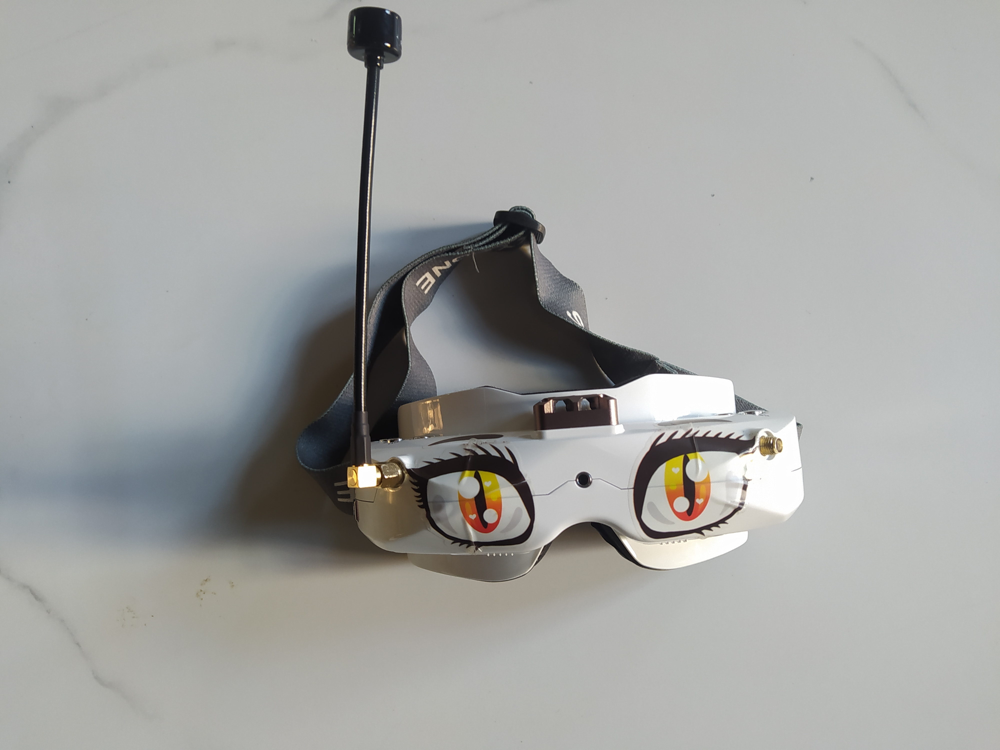

Цена: 35 000 руб (шт)
Описание товара
Приемник SteadyView, объединяет 2 сигнала в один, делает изображение более стабильным и четким в сложных условиях. Интуитивно понятный интерфейс, красочный пользовательский интерфейс с 2 языками. 640*400 OLED экран, высокий коэффициент контрастности. Поддержка 4 предустановленных настроек экрана и 3 индивидуальных настроек для различных условий полета. Легкий доступ, с портом ввода-вывода на дне.
Характеристики
- Приемник: steadyview 5,8 G 48CH V3.3
- Переключаемый режим: 16: 9 и 4:3
- Дисплей: с разрешением OLED 640X400
- Поле зрения: до 29°
- Цвет: белый
- Диапазон IPD: 59-69 мм
- Поддержка широкого напряжения: 2S-6S
- Состояние: б/у, хорошее
- Комплектация: 1 х очки sky02; 1 х антенна 5.8 ГГц